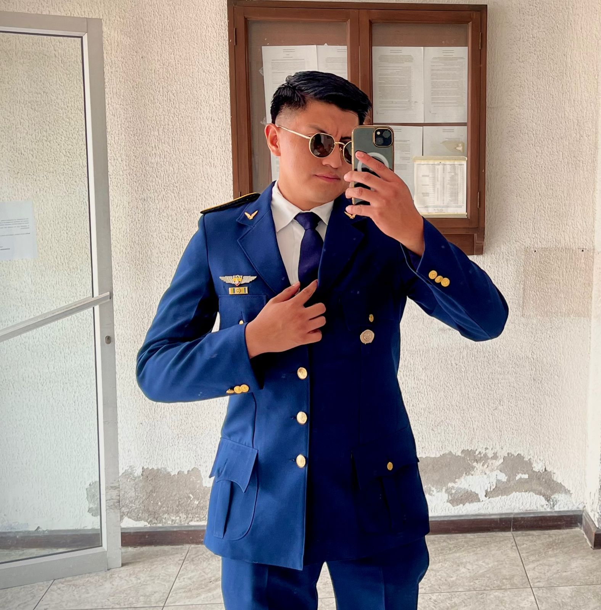

Tengo algunas habilidades entre ellas son trabajar con compañeros los mismos que fueron militares, si tengo que ser un lider en momento cruciales lo soy gracias a la formación que recibi en la Fuerza Aérea Ecuatoriana.
Me gusta arreglar laptops ya que con ello aprendo más de los nuevos modelos, me gusta cocinar ceviches, jugar Fifa y call of duty, juego ecuavoley de colocador , con mis amigos salgo a tomar cerveza artesanal es mi favorita
Soy militar de la Fuerza Aérea Ecuatoriana, de graduado recorrí el Ecuador por el Tena, en Guayaquil y Esmeraldas, realice un curso de FAE que se llama Sitffa y ahorita me encuentro con beca.
github de Bryan